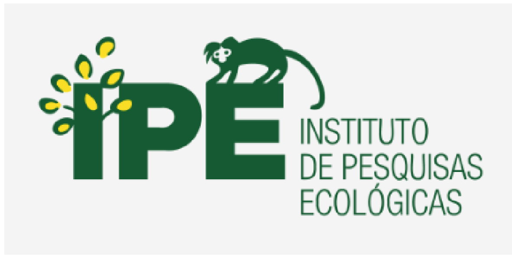
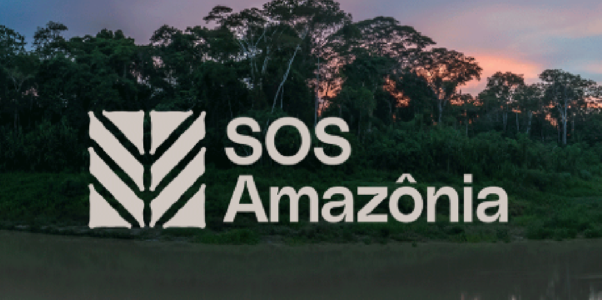
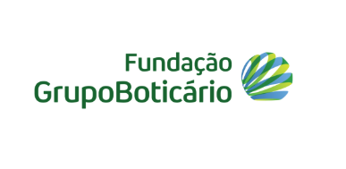

O que são ONGs ambientais?
As Organizações Não Governamentais (ONGs) são grupos que realizam trabalho social de forma coletiva, defendendo e aprimorando causas específicas para atender necessidades da sociedade como um todo.
Com o reconhecimento de que o Estado muitas vezes não é capaz ou não tem interesse em defender certas causas, as ONGs surgem como alternativa da sociedade civil para apoiar:
- 🌱 Pessoas e comunidades
- 🐾 Animais e meio ambiente
- 🤝 Causas culturais e sociais
Essas organizações são compostas por indivíduos autônomos que unem recursos voluntariamente, financiando-se através de doações e parcerias.
Principais áreas de atuação:
Assistência Social
Educação
Saúde
A importância das ONGs ambientais
As ONGs ambientais são essenciais na proteção do meio ambiente, atuando com campanhas, projetos de preservação, denúncias e parcerias com diversos setores. Elas estão na linha de frente em crises ambientais e cobram atitudes sustentáveis de governos e empresas.
Principais ações das ONGs ambientais:
- 📢 Campanhas de conscientização
- 🌳 Projetos de preservação
- 👮 Fiscalização de crimes ambientais
Atuando em parceria com sociedade civil, empresas e governo, essas organizações são cruciais na conservação da natureza, atuando na linha de frente em situações de risco e pressionando por práticas sustentáveis.
Principais ONGs do Brasil
-

IPE – Instituto de Pesquisas Ecológicas
Atua na proteção da biodiversidade brasileira com pesquisa científica e inovação socioambiental. Mantém a ESCAS (Escola Superior de Conservação Ambiental e Sustentabilidade), que forma líderes em sustentabilidade através de cursos especializados.
Visite o site -

SOS Amazônia
Criada nos anos 1980 para proteger seringueiros e combater o desmatamento. Atua em três frentes: áreas protegidas, políticas públicas e educação ambiental. Desenvolve projetos ativos de conservação na região amazônica.
Visite o site -
Instituto Socioambiental (ISA)
Organização pioneira (desde 1994) que integra questões sociais e ambientais. Atua com pesquisa, monitoramento de políticas públicas e desenvolvimento de modelos sustentáveis, especialmente em territórios indígenas e comunidades tradicionais.
Visite o site -

Fundação Grupo Boticário
Desde 1990, protege a natureza através de reservas naturais, editais de financiamento e projetos como Estação Natureza. Oferece oportunidades de voluntariado e promove gastronomia responsável.
Visite o site